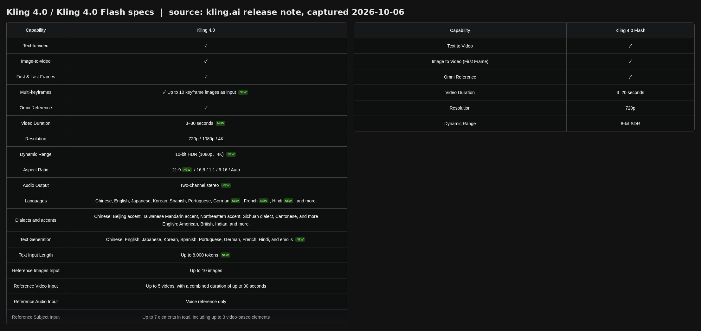
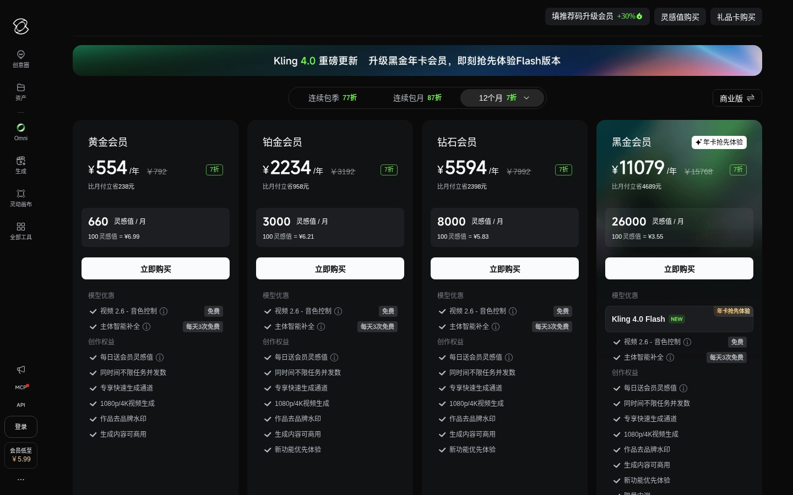
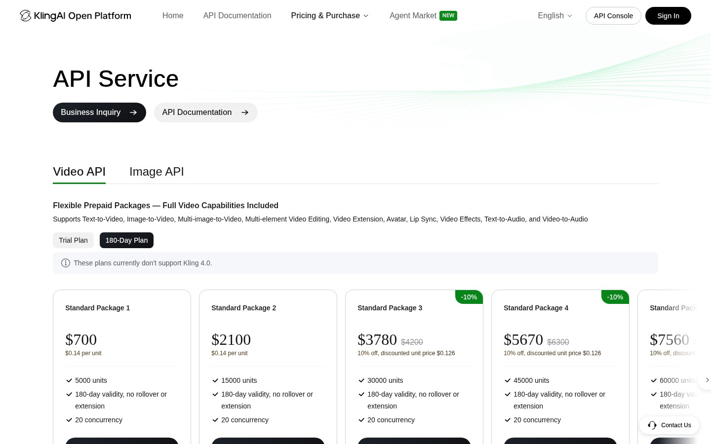

Kling 4.0（可灵 4.0）怎么用？上线时间、Flash 版、价格与提示词全攻略（2026 最新）
更新说明 ：本文写于 2026 年 10 月 6 日（北京时间）。此时 Kling 4.0 完整版还没有正式上线 ，只有轻量版 Kling 4.0 Flash 对少部分付费会员开放了抢先体验。文中凡是标“官方暂未公布”的内容，都会在正式上线后补上。建议先收藏。
快手旗下可灵 AI 在 2026 年 9 月 28 日 官宣了新一代视频模型 Kling 4.0（可灵 4.0） 。官方的说法是"10 月正式上线"，但没给具体日期。同一天，轻量版 Kling 4.0 Flash 先向海外 Ultra 年付会员、国内黑金年卡会员 开放了小范围抢先体验。
这篇把目前能确认的信息整理成一篇上手教程，内容包括：它是什么、比 3.0 强在哪、什么时候能用、怎么用、提示词怎么写、多少钱、和 Seedance 2.5 / Veo 3.1 / Sora 怎么比。所有参数都来自可灵官方页面或公开报道，传言和推测会单独标出来。
图：Kling 4.0 官方宣传片片头画面（来源：@Kling_ai 官方 X 账号 2026-09-28 发布的视频，ffmpeg 截帧）
一、Kling 4.0 是什么？
Kling 4.0 是可灵 AI 的第四代视频生成模型，官方把这次升级概括成三个词：真实、可控、专业 。目前公布的有两个版本：
| 版本 | 定位 | 当前状态（截至 2026-10-06） |
|---|---|---|
| Kling 4.0 | 完整版，主打画质、长镜头和精细控制 | 官方称"10 月正式上线"，具体日期官方暂未公布 |
| Kling 4.0 Flash | 轻量版，“为高频创作打造”，生成快、性价比高 | 9 月 28 日起向 Ultra 年付 / 黑金年卡会员抢先开放 |
需要说明一点：社交平台上有人说"4.0 今天上线了"，比如部分创作者的推广帖。实际情况是，截至发稿只有 Flash 在小范围开放，完整版还没有面向所有用户上线 。
二、Kling 4.0 有哪些新功能？对比 Kling 3.0
下面这些参数都来自可灵官网的 Release Note《Meet All-New Kling 4.0!》和官方博客：

图：可灵官网 Release Note 中的 Kling 4.0（左）与 Kling 4.0 Flash（右）规格表（截图时间：2026-10-06）
| 能力 | Kling 3.0（官方文档） | Kling 4.0（官方公布） |
|---|---|---|
| 单次生成时长 | 3–15 秒 | 3–30 秒 ，原生长镜头 |
| 分辨率 | 720p / 1080p / 4K | 720p / 1080p / 4K，另有 10-bit HDR （1080p、4K，官方标注"即将上线"） |
| 画幅 | 16:9 / 9:16 / 1:1 | 新增 21:9 超宽画幅 和 Auto |
| 关键帧 | 首尾帧 | 最多 10 张关键帧 |
| 全能参考（Omni Reference） | 支持 | 单次最多 15 项 ：图片 ≤10 张、视频 ≤5 段（总长 ≤30 秒）、主体 ≤7 个（其中视频主体 ≤3 个），另支持音色参考 |
| 音频 | 原生音频 | 双声道立体声 ，口型同步更准 |
| 语言 | 中、英、日、韩、西 | 增加葡、德、法、印地语等，并支持北京话、台湾腔、东北话、四川话、粤语，以及美式、英式、印度英语口音 |
| 提示词长度 | — | 最长 8000 tokens |
| 视频编辑 | — | 最多 5 段输入视频（含 1 段主视频），可局部改表情、动作、机位、风格、背景 |
| 视频续写 | — | 多次续写，最长 2 分钟 （官方标注"即将上线"） |
简单说，这次升级集中在四个方面：
- 更长 ：单次生成时长从 15 秒翻倍到 30 秒，一次就能讲完一个有起承转合的小片段。
- 更可控 ：10 张关键帧加 15 项参考，角色、产品、机位、节奏都能"钉住"，抽卡次数会少很多。
- 更专业 ：4K、10-bit HDR、21:9、双声道立体声，明显是冲着广告和影视后期去的。
- 更多语言 ：多语种、多方言口音，文字渲染也覆盖了多种语言和 emoji。
Kling 4.0 Flash 的规格 单独列一下（同样来自官方 Release Note）：支持文生视频、图生视频（首帧）、全能参考；时长 3–20 秒 ；分辨率 720p ；动态范围 8-bit SDR 。Flash 是否带音频、每条消耗多少灵感值，官方暂未公布 。
官方还一并改版了创作页 ：所有输入整合进一个输入框，支持网格 / 列表视图、连续时间线编辑，另外新增了画布（Canvas）和 Agent 。
三、Kling 4.0 什么时候上线？现在能用吗？
已确认的时间线：
- 2026-09-28 ：可灵官宣 Kling 4.0，称"10 月正式上线"。Kling 4.0 Flash 同日向 Ultra 年付 / 黑金年卡会员开放抢先体验。官方 X 账号 @Kling_ai 同时发布了用 Kling 4.0 制作的短片《THE BEAT》。
- 2026-10-02 ：可灵官方发布合作创作者 Johnson Sheng 的体验文章，他称自己使用的是封闭内测版本。
- 2026-10-06（美东时间） ：可灵在纽约 Advertising Week 有一场分享，官方原话是"在 Kling 4.0 发布之前"做一次前瞻。所以这场活动不是发布会 。
还不确定的：
- 完整版的具体上线日期：官方暂未公布 ，只说了"10 月"。
- 4K / 10-bit HDR、2 分钟续写会不会和完整版同一天上线：官方标的是"即将上线"，时间未定。
- API 什么时候开放：可灵开放平台的价格页目前写的是 “These plans currently don’t support Kling 4.0” （现有套餐暂不支持 Kling 4.0）。
所以，现在（10 月 6 日）能用上的只有 Flash，而且得是年付最高档会员 。其他用户只能等完整版上线。
四、Kling 4.0 怎么用？分步教程
说明：完整版还没上线，下面的步骤是按 Kling 3.x 的现有操作流程 加上官方对 4.0 新版创作页的介绍整理的。标有【基于旧版】的步骤，上线后界面可能会变，我会到时候更新。
第 1 步：选对入口
- 国内用户：打开可灵官网 klingai.com （创作台地址 klingai.com/app），也可以下载 可灵AI App，注册登录即可。
- 海外用户：打开 kling.ai ，也可以用 Kling AI App。
- 注意：网上有不少域名里带 kling4、kling-4 的第三方网站，不是可灵官方 。官方 API 目前也不支持 4.0，这类网站号称"能用 Kling 4.0"，背后实际跑的是什么模型很难核实。
图：可灵国内版创作台首页，顶部横幅写着"Kling 4.0 即将上线！黑金年卡会员现可抢先体验 Flash 版本和全新创作页面"（截图时间：2026-10-06）
第 2 步：确认会员权益
现阶段只有黑金会员 12 个月（年卡）/ 海外 Ultra 年付 的权益里写了"Kling 4.0 Flash 年卡抢先体验"。月付黑金、其他档位都没有。完整版上线后各档位能不能用、怎么扣费，官方暂未公布。
第 3 步：进入视频生成，选择模型【基于旧版】
在左侧栏进入"视频生成"或"Omni"，在模型下拉框里选 Kling 4.0 Flash（有资格的账号才会看到）。3.x 版本里模型切换就在输入框上方。按官方介绍，4.0 新版创作页会把参考图、视频、音频都放进同一个输入框。
第 4 步：选择生成方式
- 文生视频 ：只写提示词；
- 图生视频 ：上传首帧，Flash 支持首帧，完整版还支持首尾帧和多关键帧；
- 全能参考 ：上传角色、产品、场景图，或者动作 / 运镜参考视频，再用提示词说明每个素材的用途。
第 5 步：设置参数【基于旧版】
时长（Flash 3–20 秒，完整版 3–30 秒）、分辨率（Flash 只有 720p）、画幅（完整版支持 21:9）、是否生成音频。时长越长、分辨率越高，消耗的灵感值越多。具体的 4.0 计费规则官方暂未公布。
第 6 步：生成、预览、修改
生成后在时间线上预览，不满意的地方可以用"视频编辑"做局部修改，比如只改表情或背景，其他部分尽量保持不变。按官方介绍，这能减少重新生成的次数。满意后再下载。
五、Kling 4.0 提示词怎么写？附 5 个示例
官方说 4.0 能"用导演视角扩写和完善指令"，提示词上限也提到了 8000 tokens。不过想要效果稳定，还是建议按下面这个结构写：
镜头/运镜 + 主体 + 动作（按时间顺序） + 场景 + 光线/风格 + 声音/台词 + 时长与画幅
几个小技巧：
- 按时间分段写 ：30 秒的视频，用"0–10 秒 / 10–20 秒 / 20–30 秒"分段描述，比一大段话更容易控制节奏。
- 台词用引号，标明语言或方言 ：4.0 支持方言口音，可以直接写"用四川话说"。
- 参考素材要写清用途 ：比如"图 1 是女主角外观，图 2 是产品，视频 1 只参考运镜"。
- 画面里的文字写明内容和位置 ：4.0 加强了多语言文字生成，写清楚出现什么字、在哪里出现。
- 先用 Flash 试，满意了再用完整版出片 ：Flash 更快更省，适合先测构图和节奏。
示例 1：长镜头叙事（文生视频）
一镜到底的手持跟拍，30 秒，16:9。0–10 秒：清晨的老城区菜市场，一位穿蓝色围裙的年轻摊主把刚到的青菜码上摊位，笑着和邻摊阿姨打招呼；10–20 秒：镜头跟着她穿过人群去买早点，蒸笼热气升腾；20–30 秒：她回到摊位，第一位顾客走来，镜头缓缓拉远成全景。暖色晨光，纪录片质感。环境音：吆喝声、脚步声、蒸笼开盖声。
示例 2：方言对白（测试口型与方言）
中景，固定机位。成都街边茶馆，两位中年男人坐在竹椅上喝盖碗茶。左边的人放下茶碗，用四川话说："你娃今天咋个又迟到了嘛？"右边的人摆摆手，笑着用四川话回答："莫说了，堵车堵了半个钟头！"表情自然，口型与台词同步。午后自然光，环境音有麻将声和茶碗碰撞声。10 秒。
示例 3：产品广告（全能参考）
参考：图 1 为产品（白色无线耳机），图 2 为模特外观，视频 1 只参考运镜节奏。15 秒，9:16 竖屏。0–5 秒：微距特写耳机充电盒缓缓打开，冷白色轮廓光；5–10 秒：图 2 模特在城市天台戴上耳机，镜头环绕一周；10–15 秒：画面中央出现清晰的白色文字"Hear More"，背景虚化霓虹夜景。保持产品外观与图 1 一致。电子音乐，节奏感强。
示例 4：多关键帧故事（完整版能力，上线后可用）
上传 4 张关键帧：①小女孩在雨中撑伞站在公交站；②一只湿漉漉的小狗躲到她伞下；③她蹲下给小狗擦干；④雨停，彩虹下她牵着小狗离开。按关键帧顺序生成 20 秒连续视频，镜头从远景推到近景再拉回远景，过渡自然，水彩动画风格，柔和钢琴配乐。
示例 5：21:9 电影感大场面（完整版能力）
21:9 超宽画幅，电影质感。黄昏的沙漠峡谷，三名翼装飞行者从悬崖跃下，镜头以 FPV 视角高速跟随穿越狭窄峡谷，随后急速拉升成航拍全景，夕阳逆光，高光与暗部细节丰富。音效：呼啸风声、衣料抖动声，双声道立体声由左至右移动。12 秒。
六、Kling 4.0 多少钱？价格与灵感值
先说结论：Kling 4.0 和 Flash 每次生成消耗多少灵感值，官方暂未公布 。目前能确认的只有"哪个会员档位能抢先用"：

图：可灵国内版会员页"12 个月"选项，黑金会员权益中写有"Kling 4.0 Flash 年卡抢先体验"（截图时间：2026-10-06，未登录状态，价格以页面实时显示为准）
| 渠道 | 档位 | 价格（截图当日页面显示） | 每月灵感值 | 4.0 相关权益 |
|---|---|---|---|---|
| 国内版 klingai.com | 黑金会员 · 12 个月 | ¥11079/年（划线价 ¥15768） | 26000 | Kling 4.0 Flash 年卡抢先体验 |
| 国内版 | 黄金 / 铂金 / 钻石 · 12 个月 | ¥554 / ¥2234 / ¥5594 每年 | 660 / 3000 / 8000 | 未标注 4.0 |
| 海外版 kling.ai | Ultra · Yearly | $1,429.99/年（划线价 $2,160） | 26000 | Kling 4.0 Flash Annual Early Access |
| 海外版 | Standard / Pro / Premier · Yearly | $79.2 / $293.04 / $728.64 每年 | 660 / 3000 / 8000 | 未标注 4.0 |
API 方面 ：可灵开放平台价格页明确写了现有套餐"暂不支持 Kling 4.0"。现在能调用的最新模型是 Kling 3.0 系列，比如 Kling 3.0 720p 无音频为每秒 0.6 单位，约 $0.084（1 单位 = $0.14）。4.0 的 API 价格和接入时间官方暂未公布 。

图：可灵开放平台 API 价格页，提示"These plans currently don’t support Kling 4.0"（截图时间：2026-10-06）
七、Kling 4.0 vs Seedance 2.5 vs Veo 3.1 vs Sora
下表只列各家官方文档里能查到的内容。Kling 4.0 完整版还没上线，它这一列是官方公布的规格，不是实测 。
| 项目 | Kling 4.0 | Kling 4.0 Flash | Seedance 2.5（字节） | Veo 3.1（Google） | Sora（OpenAI） |
|---|---|---|---|---|---|
| 状态 | 10 月正式上线（日期未定） | 年付最高档会员抢先体验 | 2026-07-31 发布，已在即梦、豆包等上线 | Gemini API 中为 Preview | App/网页版 2026-04-26 停止服务；API 2026-09-24 关停 |
| 单次时长 | 3–30 秒 | 3–20 秒 | 最长 30 秒，支持多轮延展 | 4 / 6 / 8 秒；可续写，每次 +7 秒，最长 148 秒 | — |
| 分辨率 | 720p / 1080p / 4K（10-bit HDR 即将上线） | 720p（8-bit SDR） | 官方博客未写明 | 720p / 1080p / 4K（1080p、4K 仅 8 秒） | — |
| 参考输入 | 最多 15 项（10 图 / 5 视频 / 7 主体） | 支持全能参考，上限官方暂未公布 | 最多 30 图 + 10 视频 + 10 音频 | 最多 3 张参考图，支持首尾帧 | — |
| 音频 | 双声道立体声，多语种与方言 | 官方暂未公布 | 音视频联合生成 | 原生音频（始终开启） | — |
几点说明：
- Seedance 2.5 和 Kling 4.0 单次时长都是 30 秒；参考素材上限 Seedance 更多，Kling 4.0 则多了 10 张关键帧、4K 和 HDR 这些规格。实际效果谁好，要等 Kling 4.0 完整版上线后才能对比。
- Veo 3.1 单次最长 8 秒，但支持多次续写，官方文档写明只完整支持英语。
- Sora 已经退出：OpenAI 帮助中心写明 Sora 网页和 App 在 2026 年 4 月 26 日停止服务，API 在 9 月 24 日关停，现在没法再用它做对比测试。
八、常见问题 FAQ
Q1：Kling 4.0 什么时候上线？
官方只说"10 月正式上线"，具体日期官方暂未公布 。10 月 6 日（美东时间）纽约 Advertising Week 那场分享，官方说法是"在发布之前"，所以不是发布会。上线后我会第一时间更新本文。
Q2：Kling 4.0 Flash 是什么？和完整版有什么区别？
Flash 是 4.0 家族里的轻量版，官方定位是"高频创作、生成快、性价比高"。规格比完整版低：时长 3–20 秒（完整版 30 秒），分辨率只有 720p、8-bit SDR（完整版最高 4K、10-bit HDR），支持文生视频、首帧图生视频和全能参考。目前只有 Ultra 年付 / 黑金年卡会员能用。
Q3：国内怎么用 Kling 4.0？
可灵是快手旗下的国产产品，国内直接用官方的 klingai.com 或 可灵AI App 就行，注册登录即可。现在想用 Flash，需要开通黑金会员 12 个月（页面显示 ¥11079/年）。完整版 10 月上线后，其他档位能不能用、怎么扣费，以官方公告为准。
Q4：Kling 4.0 免费吗？
官方暂未公布 4.0 有没有免费额度。可灵会员页上有"每日赠送灵感值"一类的权益，但 4.0 能不能用这些赠送额度生成、每条扣多少，目前都没有说明，以上线后的官方公告为准。
Q5：Kling 4.0 有 API 吗？
暂时没有。可灵开放平台价格页写明现有套餐不支持 Kling 4.0，API 开放时间官方暂未公布。
Q6：网上那些 “Kling 4.0 在线免费用” 的网站靠谱吗？
这些不是官方站点。官方 API 都还没开放 4.0，第三方站点背后实际用的是什么模型无法核实，付费前要谨慎。
体验入口
用可灵做视频，最花时间的往往是写分镜和提示词。30 秒长镜头、10 张关键帧、15 项参考，想得越清楚，抽卡次数越少。这一步可以先交给大模型：
- TryAllAPI（tryallapi.com） ：OpenAI 兼容的多模型 API 聚合，一个 Key 就能用 GPT-6.1 等主流大模型。baseURL 填
https://tryallapi.com/v1，可以接入脚本或工具，批量生成分镜脚本和中英文提示词； - TryGPT（trygpt.asia） ：网页版 GPT / Gemini / Grok，不用折腾环境。先在这里把故事、分镜、台词和提示词打磨好，再到可灵里出片。
（说明：两者都是文本类大模型工具，用来辅助写提示词和脚本，不提供 Kling 视频生成 。）
图：TryAllAPI 首页（截图时间：2026-10-04）
图：TryGPT 首页登录页（截图时间：2026-10-04）
觉得有用的话点个赞、收藏。Kling 4.0 正式上线后，我会补上实测和计费细节。
参考来源
- 可灵 AI 官方博客：Introducing Kling 4.0 — klingai.com/blog/kling40-kling-visual-realism-creative-control-introducing-storytelling
- Kling AI Release Notes：Meet All-New Kling 4.0! — kling.ai/release-note/release-notes/Kling_4
- @Kling_ai 官宣帖（2026-09-28）— x.com/Kling_ai/status/2104596718067257458
- @Kling_ai《THE BEAT》短片（2026-09-28）— x.com/Kling_ai/status/2104586933473247280
- @Kling_ai Advertising Week New York 预告（2026-10-04）— x.com/Kling_ai/status/2106580068499939470
- 可灵国内版创作台 — klingai.com/app/
- 可灵国内版会员页 — klingai.com/app/membership/membership-plan
- Kling AI 海外版会员页 — kling.ai/app/membership/membership-plan
- 可灵开放平台 API 价格页 — kling.ai/dev/pricing
- Kling VIDEO 3.0 Model Guide — kling.ai/quickstart/klingai-video-3-model-user-guide
- Kling API Video Capability Map — kling.ai/document-api/guides/capability-map/video.md
- 华尔街见闻：快手可灵发布Kling 4.0：最长生成30秒，加速追赶字节Seedance — wallstreetcn.com/articles/3782675
- 智通财经（同花顺转载）：可灵AI将于10月推出全新Kling 4.0 — news.10jqka.com.cn/20260929/c680344955.shtml
- 格隆汇：快手可灵4.0将于10月正式上线 — www.gelonghui.com/live/2692486
- 北京号：随身拥有"全能剧组"！可灵4.0即将上线 — peking.bjd.com.cn/content/s6abc71c8e4b0e42f8f01026b.html
- Unhindered：Kling 4.0 release date, 4K HDR, Omni Reference — unhindered.ai/news/kling-4-0-announced-october-4k-hdr-omni-reference
- OrcaRouter（第三方）：Kling 4.0 Release Date — www.orcarouter.ai/blog/kling-4-0-release-date
- ByteDance Seed：Introducing Seedance 2.5 — seed.bytedance.com/en/blog/one-take-creation-flexible-referencing-introducing-seedance-2-5
- Google AI for Developers：Generate videos with Veo 3.1 in Gemini API — ai.google.dev/gemini-api/docs/veo
- OpenAI 帮助中心：What to know about the Sora discontinuation — help.openai.com/en/articles/20001152-what-to-know-about-the-sora-discontinuation
- BBC：OpenAI closes Sora video-making app — www.bbc.com/news/articles/c3w3e467ewqo